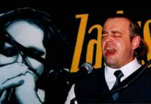

8 ноября в белостоцком клубе "Fama" традиционно состоялись "Zaduszki Bluesowe". Если кто-то, как и я, почти целый год ждал хорошего блюзового концерта (не считая небольших клубных выступлений), то он мог сказать, что наконец дождался этого. Выступали три группы: женский дуэт из Лодзи Proud Mary, Big Val, Svet & Al из Беларуси и Jazz Band Ball Orchestra из Кракова - в порядке выступления.Blueswoman из Лодзи Каролина Кориат и Александра Семенюк продемонстрировали талант и прекрасное исполнение - глубокий и интересный голос вокалистки, звучащий вунисон великолепной гитаре. Кстати, гитаристка заслуживает особенной похвалы за технику (боттлнек, фингерпикинг), а также за предоставленную белостоцкой публике возможность увидеть и услышать одну из немногих в Польше national steel guitar .
Не хочу придираться, потому что желаю этим девушкам всего самого лучшего, но считаю, что им надо бы поработать над "эстрадной" стороной своего выступления. "Fama" это большой клуб со столиками. Люди даже во время блюзовых концертов чувствуют себя как в кафе - пьют, курят, громко разговаривают. Если исполнители не привлекут их внимания решительностью представления своей музыки, то даже лучшее исполнение не поможет. Если вокалист решил в перерывах между композициями поделиться их историей, то это можно и должно сделать, но нужно самому верить, что это интересно другим. Тут во мне говорит учитель, но по опыту знаю, что произнося монолог без веры в то, что это интересно слушателю, то его интереса мы ни в коем случае не вызовем. Поэтому хочу посоветовать Proud Mary поработать над шоумэнским аспектом своей деятельности: с одной стороны быть более естественными, а с другой, обращаться к аудитории с большей решительностью - и все будет прекрасно. Я действительно верю, что мы еще услышим о Каролине и Александре, потому что они этого заслуживают.
Раскрепощенности и веры в себя определенно хватило минской группе Big Val, Svet & Al. Не обошлось и без смешных моментов. Господин, представляющий группу, извинился за слабое знание польского языка, которое оказалось очень хорошим… с единственным исключением. Несколько раз он назвал стиль музыки, исполняемой белорусскими блюзменами, как "коронный блюз". Я о блюзе немного слышал и читал, но о "коронной" его разновидности - никогда в жизни! Речь шла о блюзе, идущем от самых его корней - "коренном". (Тоже не самое лучшее слово, потому что в польском языке оно ассоциируется с заморскими приправами.)
Группа из Минска сразу же захватила внимание публики. Молодые музыканты, играющие на гитаре, гармонике и (появившемся немного позже) контрабасе, а также старший по возрасту гитарист и вокалист Big Val, доставили настоящее блюзовое удовольствие, исполняя произведения таких "коренных" легенд дельты Миссиссиппи как Роберт Джонсон (Robert Johnson) или Скип Джеймс (Skip James). Натурально жесткий голос Big Val'а придал оригинальное звучание композициям "Kindhearted Woman" Джонсона и "Devil Got My Woman" Скипа Джеймса, демонстрируя, что они не являются простыми повторениями оригиналов.
Свобода и простая детская радость, с которой белорусские блюзмены представляли свое выступление можно поставить в пример многим польским группам, которым до великолепной техники не хватает только этих двух составляющих. Рулады на гармонике в сочетании с размашистым притопыванием вызвали энтузиазм зрителей и… залпы смеха, но не злобного, а именно радостного.
Когда на сцене появились мастера из Кракова, зал охватила новая волна энергии. С первыми же звуков ударных, трубы, пианино, тромбона и саксофона (по очереди с кларнетом) все перенеслись в Новый Орлеан первой половины прошлого века и остались там до конца концерта, иногда попадая в Чикаго и нью-йоркский Гарлем. По моему мнению девизом группы Jazz Band Ball Orchestraя вляется "мы умеем делать с инструментами все, что нам нравится и при этом классно веселимся". А того, что публика при этом тоже веселилась, можно и не говорить.
Мы были свидетелями целой серии виртуозных аранжировок - как в группе, так и соло - многих композиций стиля "эвергрин" в оригинальном и великолепном исполнении, напр. "St. Louis Blues", "What a Wonderful World" Армстронга, или "Minnie the Moocher" Кэба Кэллоуэя (вместе с вокальным "разговором" с публикой) и даже "рэпа". Великолепный контакт JBBO имеет многие составляющие. Это уже упоминавшиеся инструментальные способности, необычная энергия радости совместной игры, прекрасное чувство юмора в том числе по отношению к себе самим, чего хочется пожелать всем польским исполнителям! Мастера из Кракова не только прекрасные музыканты. Это джентльмены до мозга костей. В них есть класс. Публика чувствует это сразу и всегда горячо принимает их в Белостоке.
Любителями блюза "Zaduszki Bluesowe" ассоциируются чаще всего с предвкушением "Осени с блюзом", более широкого события, которое пройдет менее чем через две недели. "Zaduszki" этого года установили высокую планку. Думаю, что музыканты, приглашенные на "Осень" не подведут и сыграют прекрасный блюз.